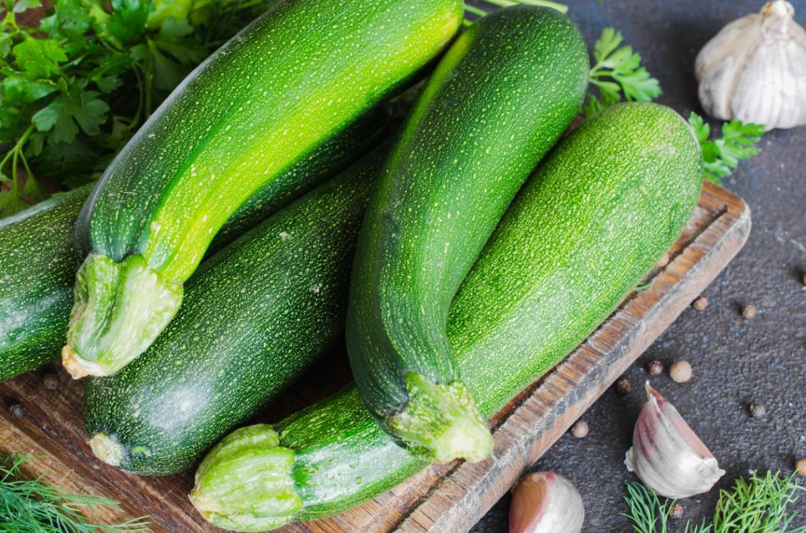
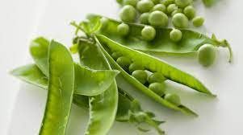

Produzione 2019
Zucchine

Coltivare in terreno molto ricco di materia organica dopo Solanacee o piante della stessa famiglia delle cucurbitacee
- Varieta: Zucchina chiara di Faenza
- Periodo di semina: Marzo / Aprile
- Primo raccolto: Fine Aprile
- Ultimo raccolto: Fine Luglio
- Raccolto:
| Dimensione |
Quantita' |
| Piccole (<10cm) |
16 |
| Medie (<16cm) |
21 |
| Grandi (>16cm) |
8 |
|
25 |
--> Acquista Semi <--
Piselli

American Wonder: Varieta' media precoce come ciclo colturale.
Consigli
-
Seminare in seminzaio riscaldato.
E' importante:
- Acquistare vasetti autoriscaldabili
- Mantenere areato il seminzaio per evitare muffe
- Non usare il coperchio del seminzaio
- Non osare mettere il seminzaio vicino il termosifone
- Fissare i sostegni nel terreno non appena le piantine raggiungono i 10cm
- Acquistare una rete con spazi di non piu' di 10cm per garantire sostegni adeguati
--> Acquista semi <--